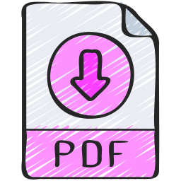

Interview.exe
Site WebInventory.exe
Campagne de communication.exe
Motion Design - Les Petites Légendes.exe
Court-Métrage.exe
Projet 6/6
Interview.exe
Site WebInventory.exe
Campagne de communication.exe
Motion Design - Les Petites Légendes.exe
Court-Métrage.exe
Projet 6/6
LinkedIn.com
CV.pdf
Interview.exe
Site WebInventory.exe
Campagne de communication.exe
Motion Design - Les Petites Légendes.exe
Court-Métrage.exe
Projet 6/6


Lors de mon premier semestre, j’ai travaillé sur un projet scolaire d’interview vidéo avec quatre camarades. Nous avons d'abord rédigé une dizaine de questions, avant de tourner dans les locaux de l’intervenant. Afin de proposer des réalisations uniques, nous avons tous réalisé nos propres montages seuls sur Adobe Premiere Pro, dont le mien est le suivant.
Cette expérience m’a permis de développer mes compétences en montage vidéo (découpe des plans, transitions, gestion du rythme) mais aussi d’apprendre à mettre en valeur le discours de l’interviewé à travers les enchaînements et les choix d’image, pour mieux faire ressentir son message. Elle m’a également donné envie d’approfondir mes connaissances en audiovisuel et de progresser en laissant davantage ma créativité et ma personnalité s’exprimer à travers mes prochains montages.
Lors de mon deuxième semestre, j’ai eu pour projet scolaire de développer seule un site web permettant l’inventaire d’objets ou de personnes. Afin d’ajouter ma touche d’originalité, j’ai décidé de répertorier tous les garçons que j’ai aimés, en m’inspirant du célèbre film éponyme. Pour ce faire, j’ai utilisé le logiciel VisualStudio Code, ainsi que la suite Adobe pour quelques éléments graphiques.
Ce projet m’a permis de dépasser mes limites en me forçant à approfondir mes connaissances dans différents langages de programmation (HTML, CSS, JavaScript) mais aussi à en découvrir un nouveau (PHP avec MySQL). J’ai tenu à exprimer ma personnalité et ma créativité tout en jaugeant l’équilibre entre humour et sérieux. Je trouve finalement que ce site me représente assez bien dans mon ambition et mon audace.

Lors de mon troisième semestre, j’ai eu pour projet, accompagnée de ma camarade, de réaliser une campagne de communication institutionnelle. Nous devions concevoir l’identité visuelle complète d’une ville (Versailles) autour d’un événement, grâce à des maquettes de page d’accueil, des bannières web et affiches. Nous avons créé nos éléments avec la suite Adobe (InDesign, Photoshop et Illustrator) avant de les rassembler sur Figma.
Ce projet m’a permis de renforcer mes compétences en design graphique et en création d’identité visuelle, d’organiser un projet de communication de manière structurée, et de collaborer efficacement avec ma camarade pour que nos créations forment un univers cohérent. J’ai aussi mieux compris les contraintes liées aux différents formats et supports, ce qui m’a aidé à adapter mes créations selon le contexte.
Contenu du projet 4...
Court-Métrage.exe
Contenu du projet 6...
Mon CV au format PDF...
Pour info : Thelma est à la recherche d'un stage de deux mois minimum en production audiovisuelle et design numérique. N'hésitez pas à la contacter !